Physics simulations created by p-simtor
Each demo was generated by a coding agent using the installed p-simtor skill, from the prompt shown on its card, in a separate project. Every page computes its motion from the real equations, shows its own verification, and runs entirely in your browser.
Get the skill on GitHub → npx skills add janosvajda/p-simtor
Precision first: what goes into one page
One simulation takes the agent about 15–30 minutes (the heaviest here took about an hour) and around 200 000 tokens. That time is spent on getting the science right, not on drawing:
- Research. It reads the skill's guide for the subject, finds the model and its sources, and checks the request for wrong premises.
- Proof before the page. The physics must pass its own tests first: exact solutions, published measurements, convergence and conservation checks.
- A full browser check. Dark, light and phone views, extreme inputs, the exact end of the run, the frame rate, every preset and every main button.
- A newcomer's eye. It looks at its own screenshots and asks whether someone without a science degree would understand them; after every fix it builds and checks again.
What it cannot compute (a black-hole merger, the protein around a molecule) each page says plainly, next to what it does compute.
Famous experiments, recreated 6

Double slit, one electron at a time
/p-simtor show the double-slit experiment with single electrons, where the interference pattern builds up one electron at a timeA 2D Schrödinger wave passes two nanometre slits; single electrons are drawn from the computed flux and the fringes build up dot by dot (KS p = 0.77), then vanish with a which-path detector.

Rutherford's gold foil experiment
/p-simtor recreate Rutherford's gold foil experiment in 3D: alpha particles hitting a gold foil, and show why it proved the atom has a tiny nucleusAlpha tracks computed in a gold nucleus's Coulomb field at true femtometre scale; counts match 1/sin⁴(θ/2) (χ² p = 0.29); switch to Thomson's atom and every track goes straight.

Stern–Gerlach in 3D
/p-simtor simulate the Stern–Gerlach experiment in 3D, including several magnets in a row, to show that spin is quantisedSilver atoms through one to three magnets; exact spin-½ evolution and the Born rule split the beam into two spots, z→x→z splits again, P(+) = cos²(θ/2).

Bubble chamber: π → μ → e
/p-simtor make a 3D bubble chamber: charged particles curling in a magnetic field, with a pion decaying into a muon and then an electronπ⁺ → μ⁺ → e⁺ in liquid hydrogen: Lorentz force with Bethe energy loss, PDG lifetimes and V−A decays; bubbles ∝ 1/β², neutrinos invisible.

Stirring a Bose–Einstein condensate until a vortex lattice forms
/p-simtor show a Bose–Einstein condensate being stirred until quantum vortices appear and form a latticeA stirred condensate (2D Gross–Pitaevskii, computed live) can only spin through identical tiny whirlpools, which settle into a triangular grid; stir faster and more appear.

Cavendish experiment: weighing the Earth
/p-simtor recreate the Cavendish experiment in 3D: weighing the Earth with a torsion balanceCavendish's 1798 torsion balance in 3D: four lead balls twist a wire by about a millimetre, and the computed swing gives G and the Earth's mass (5.97×10²⁴ kg).
Space, gravity and the cosmos 11

Two galaxies colliding
/p-simtor simulate two galaxies collidingTwo disk galaxies, 48 000 GPU-rendered stars: the prograde disk is torn into tidal tails, the retrograde one survives — Toomre & Toomre's classic result.

Black-hole binary inspiral in 3D
/p-simtor show two black holes spiralling together in 3DTwo spinning black holes spiral together while their orbit precesses; the computed gravitational wave spreads out as a spiral. The merger itself is marked not computed.

Why galaxies need dark matter
/p-simtor show why galaxies need dark matter, with a 3D galaxy of 100 000 stars100 000 stars orbit a Milky-Way model in 3D. Switch off the dark-matter halo and the disk swells from 10 to 39 kpc as stars escape.

Binary black-hole merger
/p-simtor simulate two black holes mergingTwo black holes spiral together and chirp (post-Newtonian inspiral); the merger itself is honestly marked as not computed.
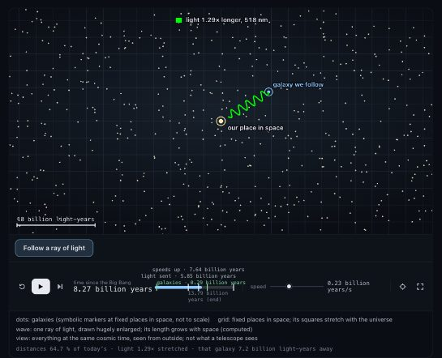
The expanding universe
/p-simtor show the universe expanding from the Big Bang to today, with galaxies moving apart and their light stretching, and how we know it is 13.8 billion years old; explain it so someone without a science background understandsSpace stretches, carrying galaxies apart and stretching their light; running the measured expansion backwards gives the age, 13.79 billion years (Planck: 13.787 ± 0.020).
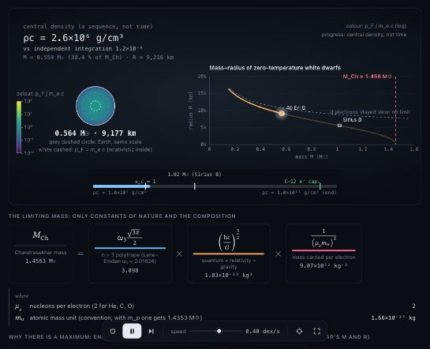
The Chandrasekhar limit
/p-simtor show why white dwarfs cannot be heavier than about 1.4 solar massesCold white dwarfs from the exact relativistic electron pressure: mass levels off at 1.456 M☉ (μe = 2) as the radius shrinks; Sirius B's radius reproduced within 0.7σ.
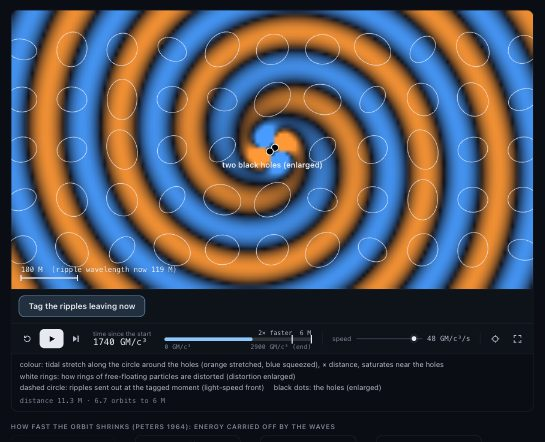
Spacetime storm: inspiral
/p-simtor show the nonlinear dynamics of curved spacetime from Kip Thorne's colloquium "Geometrodynamics: The Nonlinear Dynamics of Curved Spacetime"Two black holes spiral together; the stretch and squeeze of space around them streams out as spiral gravitational waves. The inspiral is computed; the merger is not.
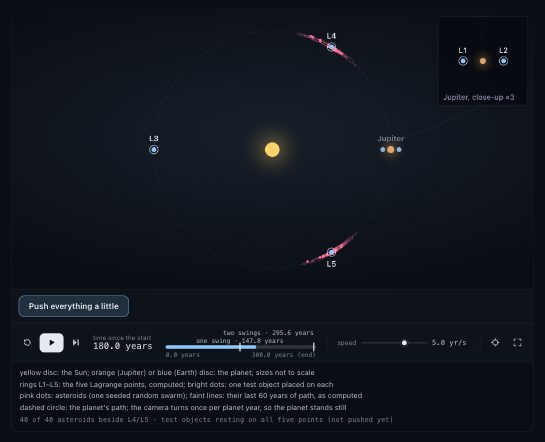
Lagrange points
/p-simtor show the Lagrange points where the James Webb Space Telescope and the Trojan asteroids stay in step with a planet; explain it so someone without a science background understandsFive spots keep pace with a planet: push everything a little and objects at L1/L2 (where Webb works) slide off, while L4/L5 and the Trojan swarm hold.
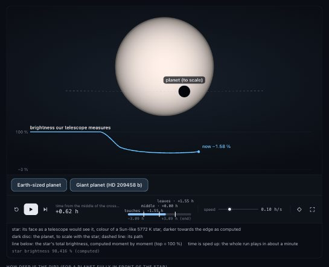
A planet crossing its star
/p-simtor show how astronomers find planets around other stars by watching a star dim when a planet passes in front of it; explain it so someone without a science background understandsA planet crossing its star (HD 209458 b, the first found this way) blocks a little light; the computed dip and its length match the measured transit.
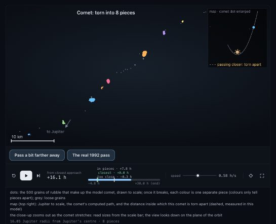
How Jupiter tore comet Shoemaker–Levy 9 apart
/p-simtor show how Jupiter's gravity tore comet Shoemaker–Levy 9 apart before its pieces crashed into Jupiter in 1994; explain it so someone without a science background understandsA 1.5 km rubble comet (500 computed grains) passes 1.33 Jupiter radii from Jupiter in July 1992; the tide beats its own gravity and it breaks into a line of pieces.
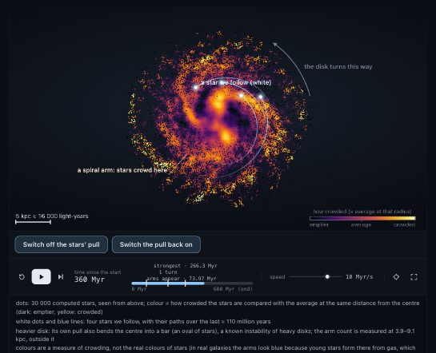
How spiral arms form
/p-simtor show how spiral arms form in a galaxy; explain it so someone without a science background understands30 000 stars pulling on each other (particle-mesh N-body) turn small clumps into spiral arms, traffic jams that stars drift through; switch off their pull and the disk stays smooth.
Particle physics and 4D gauge theory 7

Instantons in the 4D lattice vacuum
/p-simtor visualise the 4D vacuum of a lattice gauge theory: show instantons as you move through Euclidean time, slice by sliceInstantons in a 4D SU(2) lattice vacuum: Monte Carlo, then cooling; topological charge density shown slice by slice through Euclidean time (Q = −1.98).

Quark confinement
/p-simtor explain quark confinement with an interactive, scientifically qualified visualizationLattice gauge theory computes the energy between two colour charges: it keeps rising with distance, so they cannot separate.

SU(2) gauge field on the 3-sphere
/p-simtor show the SU(2) gauge field as points on the 3-sphere in 4DEvery SU(2) link and plaquette as a point on the 3-sphere: a gauge transformation scatters the links while every plaquette trace stays fixed.

4D gauge lattice, projected
/p-simtor show a 4D spacetime lattice of a gauge theory, with links, plaquettes, a Wilson loop and a Polyakov loop, by rotating it in 4DA periodic 4D lattice rotated in 4D and projected to 3D, with a plaquette, a Wilson loop and a Polyakov loop measured on a live Monte Carlo configuration.

Asymptotic freedom and the strong force
/p-simtor show asymptotic freedom and the strong forceα_s(Q) from the 4-loop renormalisation group (PDG 2024 input) next to a live SU(2) lattice showing confinement: area law, Creutz ratio 72σ from zero.

Yang–Mills mass gap: lattice evidence
/p-simtor prove the Yang-Mills existence and mass gapNot a proof (it's a Millennium problem): a lattice measurement of the glueball mass gap in 2+1D SU(2), matching Teper (1999) within 0.4σ.

The weak interaction: polarised muon decay
/p-simtor simulate the weak forcePolarised muon decay sampled event by event in V−A theory: parity violation ⟨cos θ⟩ = 1/9, Michel spectra, and the lifetime from G_F to 0.66 ppm.
Quantum mechanics 3

Hydrogen orbitals in 3D
/p-simtor visualize the 3D probability clouds of hydrogen orbitalsAll 55 hydrogen orbitals up to n = 5 as exact 3D probability clouds: a glowing |ψ|² volume plus sampled measurements coloured by the sign of ψ.

Electron tunnelling through a wall
/p-simtor show an electron wave packet tunnelling through a barrier in 2DAn electron fired at a wall it cannot climb over: its computed wave splits, and 11.98 % gets through (exact: 11.99 %); a slightly thicker wall lets far less through.

Three levels warming up
/p-simtor show how the populations of a three-level quantum system change as it heats upBoltzmann populations of three energy levels as the temperature rises, with the heat-capacity peaks they cause.
Quantum biology 5

Radical-pair compass
/p-simtor show how birds might sense the Earth's magnetic field with the radical-pair mechanism in cryptochromeExact spin dynamics of a flavin radical pair: the singlet yield depends on the direction of a 50 µT field (29 % compass contrast); a hypothesis with strong behavioural support, shown with its open questions.

Energy transfer in the FMO complex
/p-simtor show how energy moves through the photosynthetic FMO complex, and whether quantum coherence helpsLindblad dynamics of the 7-site FMO complex at its crystal positions: noise-assisted transport peaks at 99 % efficiency, where coherence adds almost nothing over classical hopping.

Hydrogen tunnelling in an enzyme
/p-simtor show how enzymes use quantum tunnelling to move hydrogen, and why deuterium is so much slowerHydrogen and deuterium race through the same energy wall (computed eigenstates, 1D double well): hydrogen seeps across ~100× faster, matching the size of the measured isotope effect.

Proton tunnelling in a G–C base pair
/p-simtor show how protons can tunnel between DNA base pairs and whether that could cause mutationsLöwdin's double proton transfer in a G–C pair: exact double-well levels plus a Lindblad environment. Tunnelling raises the tautomer population 3× over classical, but tautomers live ~20 ps — an estimate, not proof, of a tiny role in mutations.

How light twists retinal: the first step of vision
/p-simtor show the first step of vision: how light twists retinal in rhodopsin in 200 femtoseconds through a conical intersectionA computed quantum wave packet twists retinal's C11=C12 bond and drops through the funnel where two energy states meet; most comes out trans within 200 fs (Hahn & Stock model).
Heat, matter and chaos 8

Black-body radiation
/p-simtor simulate black body radiationPlanck's law live: the real colour of hot objects, from the cosmic microwave background to a 40 000 K star.

Why a double pendulum is chaotic
/p-simtor show why a double pendulum is chaoticTwo pendulums started 10⁻⁸ rad apart part ways after about 8 s; the Lyapunov exponent is measured live.

Lennard-Jones fluid (2D)
/p-simtor create an interactive Lennard-Jones particle simulationMolecular dynamics of a 2D Lennard-Jones fluid: hot gas, condensing clusters and dense liquid.

Brownian motion of a pollen grain
/p-simtor simulate Brownian motion of a pollen grain in waterPollen grains jiggle in water; their spread grows as 4Dt, Einstein's relation, and Brown's real observation is one click away.

Heating a magnet
/p-simtor show how a magnet loses its magnetism when heatedA 128×128 Ising magnet heated past its Curie point: ordered domains break up into noise.

Radioactive decay chain, atom by atom
/p-simtor simulate a radioactive decay chain atom by atomRadon-222 progeny decaying atom by atom, against the smooth Bateman curves.

Salt dissolving in still water
/p-simtor simulate how salt dissolves in a glass of waterSalt on the bottom of a still glass dissolves in hours, but takes weeks to spread through the water by diffusion.
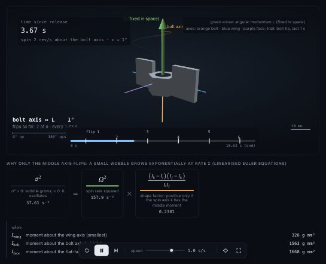
Dzhanibekov effect: the flipping wing nut
/p-simtor show the Dzhanibekov effect: why a spinning wing nut in space flips over and overA wing nut spun about its middle axis flips over and over; the measured flip interval 1.769842 s matches the exact elliptic-function value 2K(m)/λ to 4×10⁻⁹.
Waves and flows 4
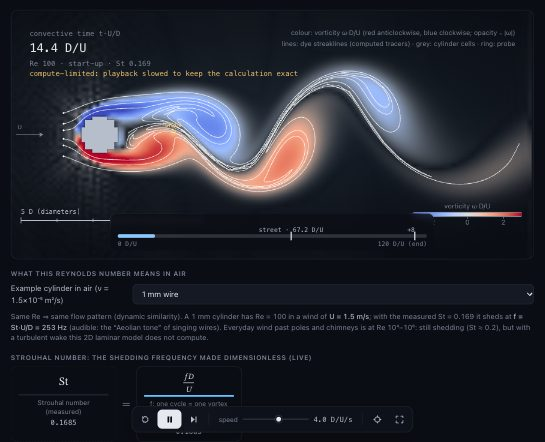
Kármán vortex street
/p-simtor show how wind flowing past a cylinder sheds a vortex street, and how the shedding frequency depends on the Reynolds numberLive lattice-Boltzmann flow past a cylinder: the vortex street appears above Re ≈ 47 (fit 47.0) and sheds at St = 0.167 at Re 100 (Williamson: 0.164).
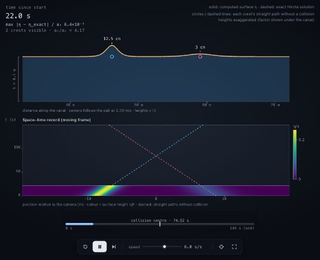
Two solitary waves colliding in a canal
/p-simtor show two solitary water waves colliding in a shallow canal and passing through each other unchangedTwo KdV solitary waves in a canal pass through each other unchanged except for position jumps of +1.238 m and −2.526 m, matching Hirota's exact solution to 10⁻⁶.
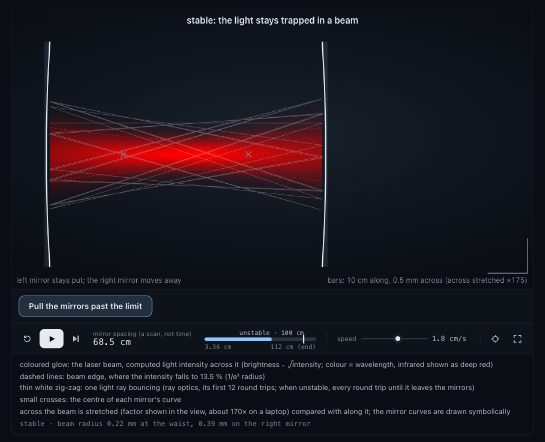
Laser cavity: mirrors and stability
/p-simtor show how a laser cavity's mirrors shape the light beam and when the cavity becomes unstableCurved mirrors trap light in a beam whose shape they set (computed Gaussian mode and bouncing ray); pull them past the limit and the light walks off.
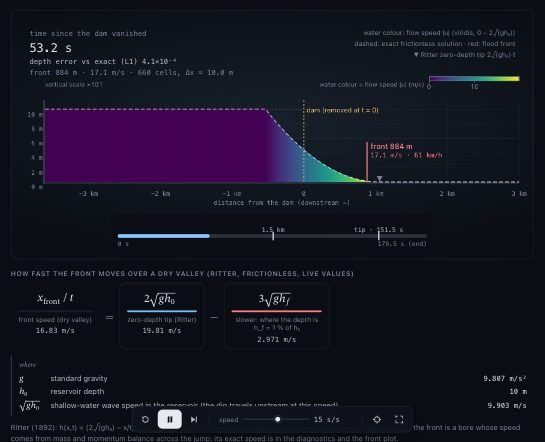
Dam break: how fast the flood front moves
/p-simtor show what happens when a dam breaks and how fast the flood front movesA shallow-water dam break against the exact Ritter/Stoker solutions: the 10 cm flood front runs at 16.81 m/s (exact 16.835), and a rough bed slows it to 5.1 m/s.